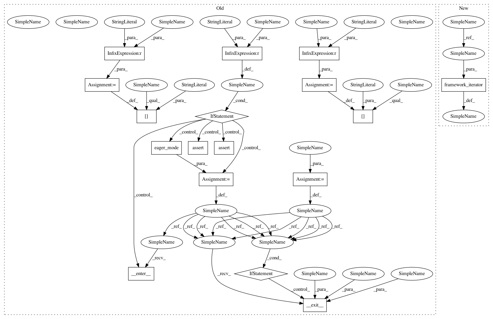

1d4823c0ec446e93d00df8ca654db4b45b63b3d4,rllib/policy/tests/test_compute_log_likelihoods.py,,do_test_log_likelihood,#Any#Any#Any#Any#Any#Any#,18
Before Change
if run in [dqn.DQNTrainer, sac.SACTrainer] and fw == "torch":
continue
print("Testing {} with framework={}".format(run, fw))
config["eager"] = fw == "eager"
config["use_pytorch"] = fw == "torch"
eager_ctx = None
if fw == "tf":
assert not tf.executing_eagerly()
elif fw == "eager":
eager_ctx = eager_mode()
eager_ctx.__enter__()
assert tf.executing_eagerly()
trainer = run(config=config, env=env)
policy = trainer.get_policy()
vars = policy.get_weights()
// Sample n actions, then roughly check their logp against their
// counts.
num_actions = 1000 if not continuous else 50
actions = []
for _ in range(num_actions):
// Single action from single obs.
actions.append(
trainer.compute_action(
obs_batch[0],
prev_action=prev_a,
prev_reward=prev_r,
explore=True))
// Test all taken actions for their log-likelihoods vs expected values.
if continuous:
for idx in range(num_actions):
a = actions[idx]
if fw == "tf" or fw == "eager":
if isinstance(vars, list):
expected_mean_logstd = fc(
fc(obs_batch, vars[layer_key[1][0]]),
vars[layer_key[1][1]])
else:
expected_mean_logstd = fc(
fc(
obs_batch,
vars["default_policy/{}_1/kernel".format(
layer_key[0])]),
vars["default_policy/{}_out/kernel".format(
layer_key[0])])
else:
expected_mean_logstd = fc(
fc(obs_batch,
vars["_hidden_layers.0._model.0.weight"]),
vars["_logits._model.0.weight"])
mean, log_std = np.split(expected_mean_logstd, 2, axis=-1)
if logp_func is None:
expected_logp = np.log(norm.pdf(a, mean, np.exp(log_std)))
else:
expected_logp = logp_func(mean, log_std, a)
logp = policy.compute_log_likelihoods(
np.array([a]),
preprocessed_obs_batch,
prev_action_batch=np.array([prev_a]),
prev_reward_batch=np.array([prev_r]))
check(logp, expected_logp[0], rtol=0.2)
// Test all available actions for their logp values.
else:
for a in [0, 1, 2, 3]:
count = actions.count(a)
expected_prob = count / num_actions
logp = policy.compute_log_likelihoods(
np.array([a]),
preprocessed_obs_batch,
prev_action_batch=np.array([prev_a]),
prev_reward_batch=np.array([prev_r]))
check(np.exp(logp), expected_prob, atol=0.2)
if eager_ctx:
eager_ctx.__exit__(None, None, None)
class TestComputeLogLikelihood(unittest.TestCase):
def test_dqn(self):
Tests, whether DQN correctly computes logp in soft-q mode.
config = dqn.DEFAULT_CONFIG.copy()
After Change
continuous=False,
layer_key=("fc", (0, 4)),
logp_func=None):
config = config.copy()
// Run locally.
config["num_workers"] = 0
// Env setup.
if continuous:
env = "Pendulum-v0"
obs_batch = preprocessed_obs_batch = np.array([[0.0, 0.1, -0.1]])
else:
env = "FrozenLake-v0"
config["env_config"] = {"is_slippery": False, "map_name": "4x4"}
obs_batch = np.array([0])
preprocessed_obs_batch = one_hot(obs_batch, depth=16)
prev_r = None if prev_a is None else np.array(0.0)
// Test against all frameworks.
for fw in framework_iterator(config):
if run in [dqn.DQNTrainer, sac.SACTrainer] and fw == "torch":
continue
In pattern: SUPERPATTERN
Frequency: 3
Non-data size: 17
Instances
Project Name: ray-project/ray
Commit Name: 1d4823c0ec446e93d00df8ca654db4b45b63b3d4
Time: 2020-04-03
Author: sven@anyscale.io
File Name: rllib/policy/tests/test_compute_log_likelihoods.py
Class Name:
Method Name: do_test_log_likelihood
Project Name: ray-project/ray
Commit Name: 1d4823c0ec446e93d00df8ca654db4b45b63b3d4
Time: 2020-04-03
Author: sven@anyscale.io
File Name: rllib/tests/test_model_imports.py
Class Name:
Method Name: model_import_test
Project Name: ray-project/ray
Commit Name: 1d4823c0ec446e93d00df8ca654db4b45b63b3d4
Time: 2020-04-03
Author: sven@anyscale.io
File Name: rllib/utils/exploration/tests/test_explorations.py
Class Name:
Method Name: do_test_explorations
Project Name: ray-project/ray
Commit Name: 1d4823c0ec446e93d00df8ca654db4b45b63b3d4
Time: 2020-04-03
Author: sven@anyscale.io
File Name: rllib/policy/tests/test_compute_log_likelihoods.py
Class Name:
Method Name: do_test_log_likelihood